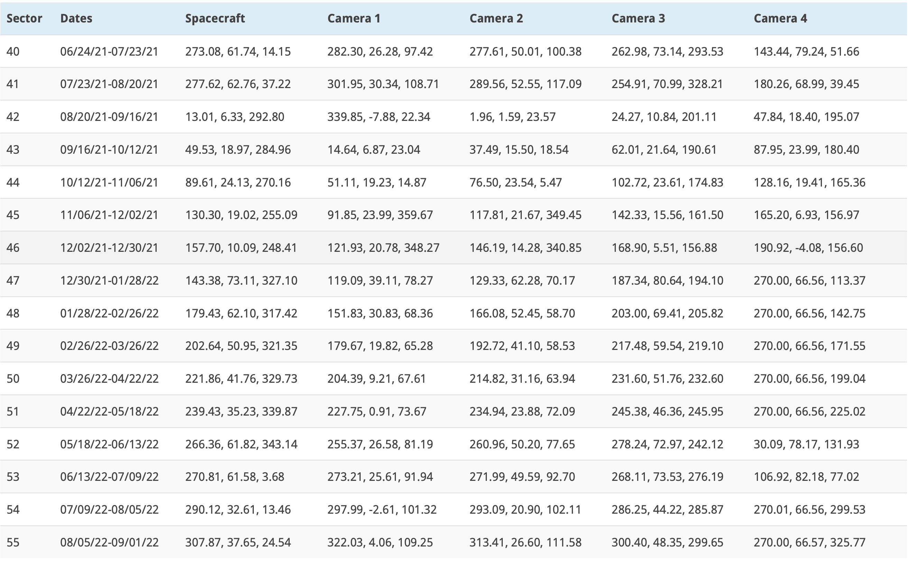

After the completion of its prime mission in July of 2020, TESS entered its first extended mission which lasted approximately two years ending in September 2022. This first extension of the TESS mission involved an extensive Guest Investigator Program that was executed over two observing cycles.
Observing strategy
TESS Cycle 3 comprised of Sectors 27 - 39, during which the Southern ecliptic hemisphere was re-observed, In these Sectors the instrument boresight was pointed at an ecliptic declination of -54°.
The TESS Cycle 3 coverage, dates, and camera information are shown below.
TESS Cycle 4 was comprised of 16 Sectors instead of 13, and as such lasted ~15 months running from Sectors 40-55. In this Cycle the Northern hemisphere was observed, with Sectors 40-41 sharing similar pointings to that of 14 and 15, at an ecliptic latitude of +85°. Sectors 42-46 were ecliptic pointings and Sectors 47-55 Northern hemisphere pointings at an ecliptic latitude of +54°. Sectors 52 and 53 then shifted north to +85° to avoid scattered light in cameras 1 and 2.

List of the sectors in Cycle 4. Details of the cameras, angles, and dates are provided. Credit: Taken from the TESS MIT Page.
Data Products
In Cycles 3 and 4, the following data products were produced, these are slightly different to those of the primary mission.
- 2-minute cadence data for a select number of targets.
- 20-second cadence data for a select number of targets. This was a new mode that was added in the extension of the mission.
- 10-minute full frame images instead of 30-minute.
The 20-second cadence mode was allotted to ~600 targets per sector. There was roughly a 6 times increase in the number of 2-minute cadenced targets in the GI program compared to the prime mission, that is ~15,000 target slots in each sector.
Proposal categories
With the extension of the mission, TESS became a Guest Investigator driven experiment, with >80% of the time dedicated to GI proposals.
In Cycle 3, a new Key-Project proposal category was made available. These are programs that had a maximum duration of 27 months and covered Cycle 3 and 4. They were large programs intended to have a significant scientific output.
In Cycle 4, a new Mini proposal category was made available. These programs required minimal resources, up to 50 20-second cadence targets and 1,000 2-minute cadence targets. Proposals in this category were not eligible for funding.
No Key projects were solicited in Cycle 4.
Ground-based observing focused programs were also solicited provided that they support the analysis and/or interpretation of TESS data. Up to $500K was used to support ground-based programs.
During the extended mission new joint programs with Swift and Fermi were also introduced.
Extended mission results
Cycle 3 received 155 proposals with those selected covering a broad range of topics, from studies of comets in our own Solar System to searching for the counterparts of gamma-ray bursts. Specifically these 155 proposals were split into one of five fields: Exoplanets (33), Stellar Astrophysics (81), Accretion and Extragalactic (15), Solar system (5), and Other (3) - which can refer to data analysis studies etc. Of these proposals 23 were ground-based focused.
In Cycle 4, 146 proposals were submitted with 24 of these being mini proposals - our newest proposal category, and 32 ground-based focused. The 146 proposals were split once again into the five fields outlined above with the following breakdown: Exoplanet (37), Stellar Astrophysics (91), Accretion and Extragalactic (15), Solar system (0), and Other (3).
In total, 50 proposals were selected from Cycle 3 and 62 in Cycle 4. The accepted proposals had the followng breakdown:
Accepted Proposals
| Cycle | Exoplanet | Stellar Astrophysics | Accretion and Extragalactic | Solar system | Other |
|---|---|---|---|---|---|
| 3 | 17 | 25 | 5 | 2 | 1 |
| 4 | 19 | 38 | 4 | 0 | 1 |
| Total: | 36 | 63 | 9 | 2 | 2 |
Our approved programs page provides the full list of accepted Cycle 3 and Cycle 4 proposals.
Note that Cycle 4 was the first call in which all proposals were reviewed using a dual anonymous approach. Proposals submitted in all future cycles will be reviewed under these conditions.
To date, there have been over 800 publications utilizing the TESS data. Now, in the extended mission, the number of publications related to non-exoplanet science have overtaken those focusing on exoplanets only. Check our publications page for more information.